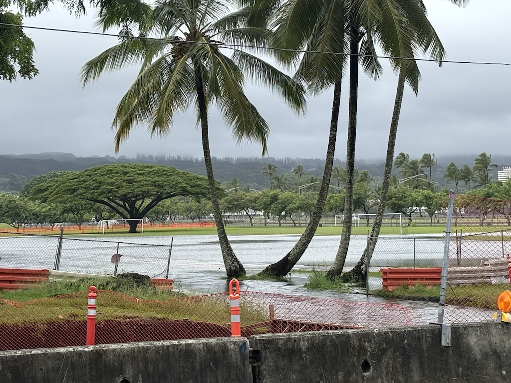
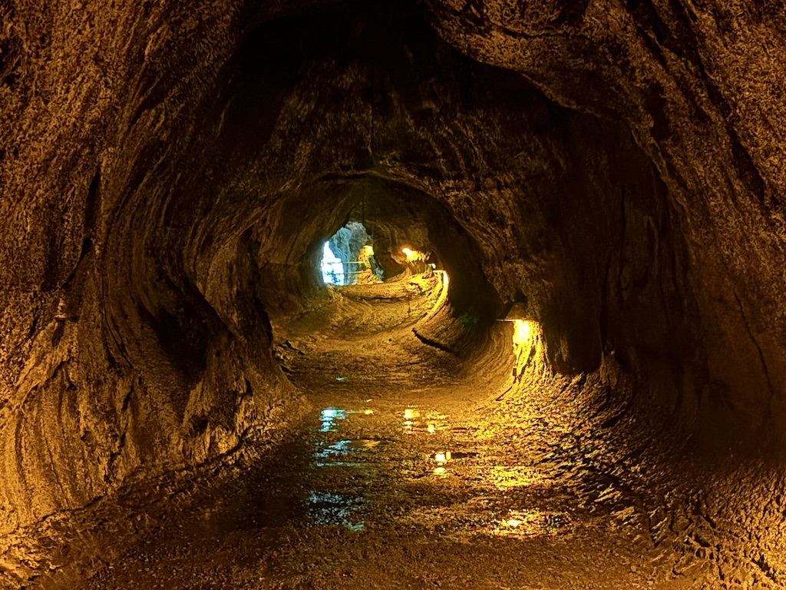

24th to 30th August 2024
Note that for privacy reasons the names in this article have been changed.
Aloha to you regular or irregular reader. We have officially left the mainland! Flying almost 6 hours into the Pacific ocean did feel a little unnerving, especially when Delta airlines give you a little graphic of where you are in the world. But excluding a fair bit of heavy turbulence I have arrived soundly in Hawaii. This update is of the first part of my trip to the Hawaiian Islands exploring the Big Island (originally Hawai'i island before the term was used to describe the whole cluster).
The Big Island has 2 main airports, one in Kona on the western side of the island and on in Hilo on the eastern side. After talking over the phone a family friend (Nico) was happy to let me stay with them while I visited. Booking my flights before I planned my accommodation did result in me landing on the wrong side of the island, so the first step after grabbing my checked bag was working out how to get to Hilo. I discovered when speaking with Nico that Hurricane Hone was en route to Hawaii, glancing quite close to the Big Island. This explains the freak turbulence as we came in to land, as well as the bus cancellations; the South part of the belt road around the island was closed due to flooding. Oh dear I thought, I have 75 miles to cover before sundown, somehow...
I checked Uber (which did operate here interestingly) - $250. I checked nearby hotels to stay at - $200 Nico was actually staying at his home in the worst of it in Pahala - I was travelling to a different place they had in Hilo just until the storm blew through. Things were looking either dire (sleep in the airport?) or expensive. I paced up and down the short road outside the airport and had a think

As a complete gamble I went up to a guy around my age with a Muse hat on and popped the question
"Hi mate, is there any chance you're heading to Hilo"
"Yeah, I am actually"
I couldn't believe my luck. The first guy I meet isn't heading North to one of Kona's many resorts. He's not heading South to Kahaluu-Keauhou or Captain Cook He's going to the opposite side of the island, just like myself.
"Really?! Is there any chance I could get a lift there with you?"
"I mean, I'd have to ask my friends, they're picking me up in a minute. But I'm sure we could squeeze you in."
It turns out he intended on flying into the airport in Hilo but due to the weather his flight was re-routed to Kona. I mention I'm from where Muse grew up which help my first impression just as his friends arrived.
"Yeah, so this is Charlie and he needs a ride to Hilo. Can he come?"
"Course, I'll open the trunk so you can put your bag in the back. Get in."
And just like that I was on my way. We did all our proper introductions in the car - the 2 picking us up were students of marine biology at the university in Hilo. My friend with the Muse hat just finished a degree in English, looking for a trip to help inspire him on what to write. I learnt on the way over of the many microcosms of climate Hawai'i has, Kona being the dryer and clearer side and Hilo being especially wet. This was confirmed as we drove north along the belt road, rain began pouring down and the whole view out the front completely fogged over for a good 20 miles.

Despite the very strong winds the car stayed glued to the road (we joked partially due the hitchhiker these lovely people just picked up) and I was dropped out right outside Nico's door in Hilo. The rain was torrential and noisy yet pleasantly warm as I wandered up to this very quiet house. A quick face time with Nico and I find the hidden key and am in. He shows me where I can sleep, I thank him profusely, dry off and pass out.
I wake to, still, the sound of rainfall on the roof of the house. Although I had slept through the night without waking once, the rain had non-stop hammered at the ceiling above my head. After a cup of tea and some life admin there's a break in the hurricane-caused rainfall and I walk into Hilo city center.

Although it is the first and most major town on the Big Island it is not a big place. The northern half of the sea front is fairly run down and abandoned. Nico taught me later on that this part of town is much more prone to damage from tsunamis, hence the towns preference to build further south. I wandered down the Farmers Market and bought a Poke Bowl from the stall opposite which was pretty tasty.
On my walk through the town I did bump into the guys that gave me the lift the day before. They said they were going home after a quick wander, the storm was due to sweep back in that afternoon. I wandered down to the seafront to look at the black stone shingle shore and walked past the most heavily waterlogged football pitch I've ever seen. It's safe to say the game's cancelled this weekend.
It starting raining really hard at this point and being tight as I am I refused to get a taxi back and walked the 30 minutes home in the pouring rain. Once back I dried my clothes and just spent the rest of the afternoon writing, booking flights, catching up with friends and family and generally relaxing to the sound of the rain.
The next day Nico was able to drive to the house in Hilo and pick me up. Today was the day we were going to do some exploring together. He took me back to the market to buy me some fruit. We ate bananas and papayas from the farmers direct which were very sweet and very juicy.
We visited Rainbow Falls first, named as in the sun the mist produces a huge rainbow. Sadly due to the rain this was not visible. Next was Akaka Falls State Park, which as a non resident I had to pay a few dollars to go in. No big deal and definitely worth it. The hike stretched through the rainforest passing huge bamboo and old trees caked in moss. At the end was the falls; water dropping hundreds of feet surrounded by green growth. There were also lots of other smaller water runoffs along the sides of the main waterfall, carving miniature paths through the growth for themselves. A beautiful view for sure.

After this we went to the Volcano National Park. On a misty day like this the only thing worth doing there was the Lava Tube. At least that is true at the time of writing this - due to how unstable this place is it could be completely different in 50 years! Lava flowing under the surface has a higher flow rate at the core of the flow than the outer edges. As the edges cool and form into rock, a tunnel shape is formed. Sometimes the central lava entirely drains out, leaving these odd shaped tunnels underground.
Our final stop for the day was the Kau Coffee and macademia Nut farm. Nico knows this farm well having previously worked there and showed me around. A huge farm feeds into this single space for drying and washing the coffee beans.

Now some of you readers may have seen a macademia nut before, but I hadn't. I asked Nico if they used a specific farming machine to harvest the trees. I've seen big tractor accessories like an upside-down umbrella before shaking trees and catching everything that falls off. It turns out instead they just collect the nuts after they've fallen to the ground. We cracked a few macademia and I learnt how incredibly firm the outer shell is. This means farmers can leave the nuts on the ground for quite a while after falling and the actual nut inside is fully protected. The more you know.

We went back to the house and I settled in with all my stuff. For the time of my stay with Nico and his family they were extremely kind I slept in my own room that was actually external to the house for better privacy at night. Every day I was fed Philipino breakfast and dinner as well as offered fruit or coffee that other neighbors to the family had given them. I was even lent one of the spare cars (after a quick lap around the block to check I could actually drive). With no knowledge of who I was other than a distant family connection they were lovely to stay with and very generous.
Over the next few days I explored along the eastern southern and western coastlines of the Big Island. From these day-trip days here are the highlights.
Sacred cove where warriors can take refuge. Lots of carved figures of ancient gods.
Hike around and across Large crater in Hawaii Volcano National Park
Traditional structures and big fish trap and wild turtles!
Navigate home